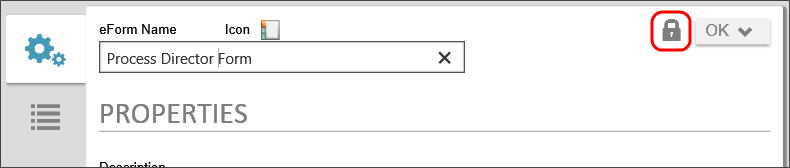
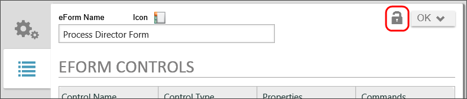

Process Director v3.49 and above implements a new object locking system for object definitions (e.g., Business Rules, Knowledge Views, or Process Timeline definitions) to ensure that multiple users can't edit the same object definition at the same time, and thus overwrite each others' changes. Process Director implements object locking by default, but object locking can be turned off by setting the ObjectLockingEnable custom variable to "false" in the Custom Vars file.
When object locking is enabled, users who edit an object definition can click the object's Lock Object button to ensure that any other user who opens the definition will see the object only in read only mode. The locking user will be the only user with editing capability while the object is locked.

Once an object is locked, the lock will remain in effect until the locking user manually clicks the object's Release Lock button to release the lock. Even if the locking user saves or closes the form, or logs out of Process Director, the object will remain locked until the locking user manually releases the lock.

Object locking can also be required by setting the ObjectLockingForce custom variable to "true" in the Custom Vars file.
BP Logix recommends requiring object locking.
When object locking is required, object definitions are opened in "read-only" mode for all users. Any user who wishes to edit the object definition can only do so by checking out the object. When the locking user clicks the object's Lock Object button, the definition will display in edit mode for the locking user, and remain in read-only mode for all other users. Again, the lock will remain in effect until the locking user manually clicks the object's Release Lock button to release the lock. Once the locking user clicks the Release Lock button , the object definition, when opened, will display in read-only mode for all users.
If you lock or release a lock on a folder, the operation will be applied to all of the contents of the folder, assuming that you have the right to lock or unlock the child objects. Process Director will silently skip objects the current user doesn’t have the right to unlock. Locking, similarly, will preserve any existing locks in the folder that are held by someone other than the current user (that is, they'll still be held by the original lock holder). Folder locking will lock all objects recursively in the folder tree, not just the direct children of the folder. The button text for the lock/unlock button will reflect this difference to locking applied to folders.